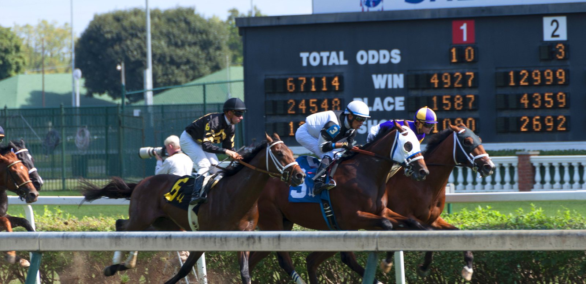

Aidan O'Brien confirma tres potros para el Dewhurst del Future Champions Day
Siete dosañeros siguen en el Darley Dewhurst Stakes (G1) del sábado 10 de octubre en Newmarket, y 42 caballos confirman para la Club Godolphin Cesarewitch.

CC BY 2.0
El Darley Dewhurst Stakes (Grupo 1), dotado con 500.000 libras y disputado sobre 7 furlongs, ha quedado reducido a siete confirmados a cinco días de la carrera. Aidan O'Brien aporta casi la mitad del lote con Darkness Falls, Great Barrier Reef y Raging Bull. Godolphin responde con tres: Desert Castle, con William Buick, y Jassas, con Billy Loughnane, ambos de Charlie Appleby, y Rock Montreal, preparado por Roger Varian. Completa la lista Gentle Hurricane, de Andrew Balding, para Mrs A. Althani. Todos cargan 9 st 3 lb. Raging Bull y Rock Montreal mantienen también la inscripción en el Emirates Autumn Stakes.
El Dubai Future Champions Festival se celebra el viernes 9 y el sábado 10 de octubre. Además del Dewhurst, su cartel incluye el bet365 Fillies' Mile (Grupo 1), también de 500.000 libras, y la Club Godolphin Cesarewitch. El terreno figura como Good to Firm.
La Cesarewitch (Heritage Handicap, 175.000 libras, 2 millas y 2 furlongs) reúne 42 confirmaciones. Encabeza los pesos A Piece of Heaven, con 9 st 12 lb, para Joseph Patrick O'Brien. Le siguen Tactician (Andrew Balding) y Samui (Gordon Elliott), ambos con 9 st 10 lb. El preparador irlandés presenta otros dos caballos de J. P. McManus: Comfort Zone y Dawn Rising, con Ryan Moore en la silla de este último. James Doyle aparece sobre Cock And Bull (Emmet Mullins) y William Buick sobre Valedictory (John & Thady Gosden). W. P. Mullins inscribe a Highwind. A. J. Martin y James Owen confirman cuatro caballos cada uno. Cierra la escala Vaguely Royal, de Ian Williams, con 7 st 9 lb.
La jornada del sábado arranca a las 13:15 con el Too Darn Hot Darley Stakes (Grupo 3, 1 milla y 1 furlong), con 13 inscritos. Entre ellos están Portcullis, de los Reyes, con John & Thady Gosden, y Pathein, de Ed Dunlop, con Ryan Moore.
A las 13:50 se corre el Night of Thunder Zetland Stakes (Grupo 3, 1 milla y 2 furlongs), con 11 dosañeros. Cinco de ellos son de Aidan O'Brien: Albany County, Capability Brown, Drumbeat, Hmas Perth y Wall Street.
A las 14:25 llega el Emirates Autumn Stakes (Grupo 3, 1 milla). Tiene 16 inscritos, siete de ellos de Ballydoyle. Entre los demás figuran Al Jabbar (Charlie Appleby), Notable Dream, con Silvestre De Sousa, y Undiscovered (Ralph Beckett).
El Dewhurst está programado a las 15:00 y la Cesarewitch a las 15:40. Después se disputan el Triple Time Maiden Fillies' Stakes (16:15, 7 furlongs, 15 inscritas) y el Dubai Racing Club Nursery Handicap (16:50, 7 furlongs). Este último cuenta con 19 inscritos, entre ellos National Honour, de Godolphin, con William Buick.
Por Martín Larrañeta